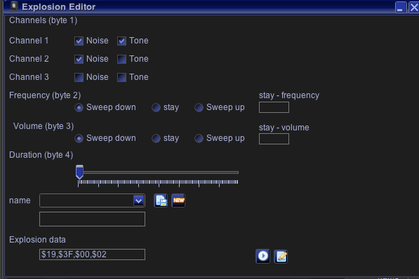

Explosion Editor
In this editor you can generate, save, load "explosion data" for use with the BIOS explosion routine. For a detailed description of the parameters, please look at the Bruce Tomlin disassembly.
The generated explosion data always consists of 4 bytes which must be passed to the explosion routine.
The GUI elements change the "generated" bytes directly (textfields → press return!), so you can see directly which bits/bytes are changed.
Hitting "play" will generate a vectrex program which plays your current edited explosion upon a button press.
You can also view (and edit) the generated "explosion source code" in Vide.
Short "general" description:
each explosion can use any number of channels (1-3).
each explosion can use tone and/or noise for each channel
the frequency/volume for all channels is the same
frequency (noise frequency, you can not set the tone frequency using this BIOS function)/volumne can swoop up and down or stay at a fixed value. (Frequency is a 5bit value, volume a 4bit value)
if a fixed value is used, than the values must be entered into the corresponding textfields
a duration of the effect can be given
You can save - and load explosion configurations.